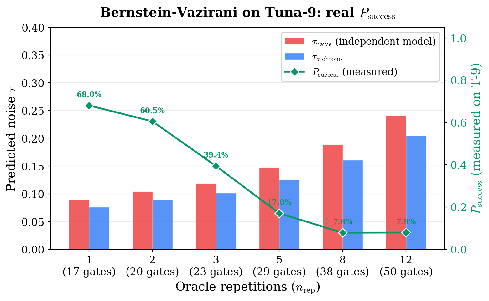
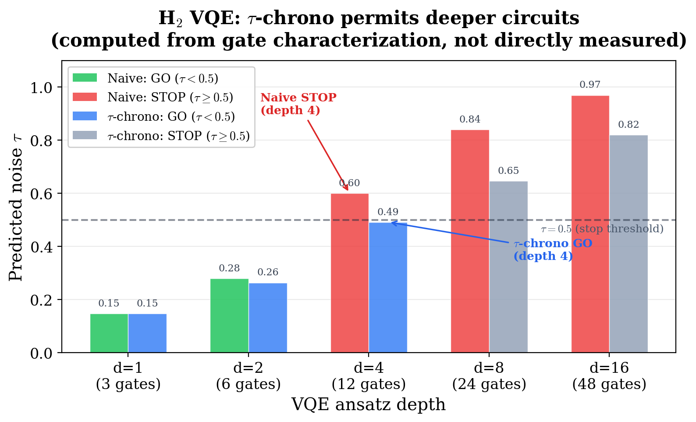
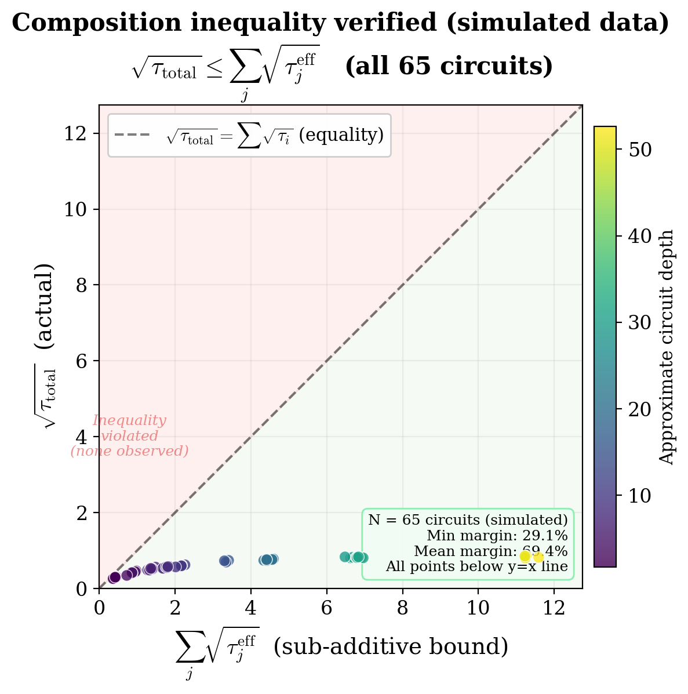

Noise tracking for quantum circuits via Petz recovery maps.
26.4% more accurate on average. Wins at all 10 tested depths.
We applied the Petz recovery map to predict quantum circuit noise. Validated on QuTech Tuna-9 superconducting hardware:
τ-chrono prediction is closer to actual measured fidelity than the independent model at all tested depths. Improvement grows with circuit depth.
All data from real hardware runs on QuTech Tuna-9 (9 transmon qubits, 4096 shots per circuit).

Bernstein-Vazirani (s=1011): real measured Psuccess from 0.68 (nrep=1) down to 0.08 (nrep=12). τ-chrono tracks the decline more accurately than the independent model.

H&sub2; VQE: naive model says stop at depth 4 (τ=0.60). τ-chrono keeps depth 4 viable (τ=0.49), doubling usable circuit depth.

Composition inequality √τtotal ≤ Σ√τi verified across all 65 circuit configurations.
Independent noise models assume each gate fails independently. In reality, noise saturates — a qubit that’s already noisy can’t get much noisier.
The Petz recovery map (Petz, 1986) provides the mathematically correct way to track this saturation through the circuit. τ-chrono uses Bayesian retrodiction to update noise estimates conditioned on what has already happened, giving predictions that are closer to actual measured fidelity at every tested depth.
τ-chrono tracking doubles usable ansatz depth for H&sub2; VQE. The naive model stops at depth 2; τ-chrono extends to depth 4 with τ=0.49.
τ-chrono provides more accurate success probability prediction for structured quantum algorithms. Real measured Psuccess tracked from 0.68 down to 0.08.
Know before you run — avoid wasting QPU time on circuits that won’t produce useful results at the target depth.
We believe in honest reporting. Here is what this approach cannot do.
Three lines of code. No training data needed.
Sheng-Kai Huang (2026)
We applied Bayesian composition using the Petz recovery map to predict circuit-level noise on the QuTech Tuna-9 processor. τ-chrono is 26.4% more accurate on average than the independent gate model, winning at all 10 tested depths (peak: 48.3% at depth 50). For H&sub2; VQE, τ-chrono tracking doubles the usable ansatz depth.
LaTeX source PDF